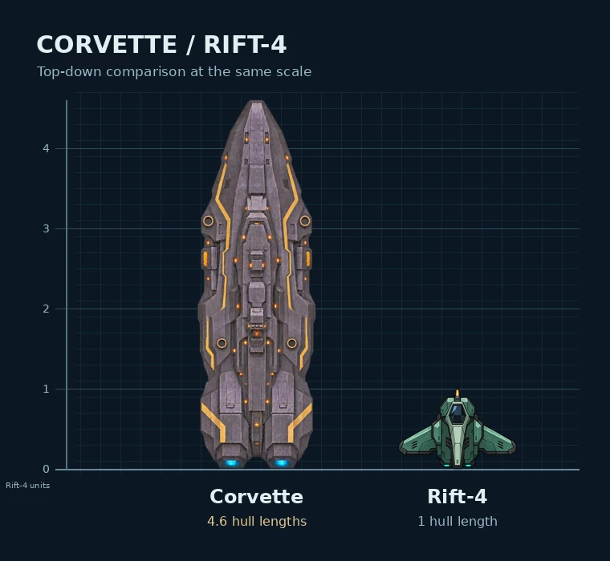
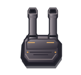

Fleet technical preview
Resolute
Corvette · Keel-12 hull · Captain Imani Rook
Federal Navy
Fit, aim and fire up to four twin turrets in the test range. Preview only. Nothing is bought, saved, or launched.
Keel-12 · Top view

Hull reference · Four Size 4 sockets shown empty in this drawing.

Size 4 · Twin barrel
Twin Turret
One detachable turret, two prongs. It fits the four Size 4 Corvette sockets. The default escort carries one. Each fitted turret aims and recharges independently in this range.
Port forward
Starboard forward
Port aft
Starboard aft
Preview loading…
Corvette-only systems
- Engine
- Keel Drive
- He3 generator
- Keel He3 Generator
- Storage
- Keel Reserve Cell
Corvette equipment is not sold in Mara’s shop or fitted to player fighters.